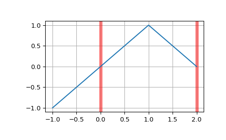

scipy.interpolate.BSpline.integrate¶
-
BSpline.integrate(a, b, extrapolate=None)[source]¶ Compute a definite integral of the spline.
- Parameters
- afloat
Lower limit of integration.
- bfloat
Upper limit of integration.
- extrapolatebool or ‘periodic’, optional
whether to extrapolate beyond the base interval,
t[k] .. t[-k-1], or take the spline to be zero outside of the base interval. If ‘periodic’, periodic extrapolation is used. If None (default), use self.extrapolate.
- Returns
- Iarray_like
Definite integral of the spline over the interval
[a, b].
Examples
Construct the linear spline
x if x < 1 else 2 - xon the base interval \([0, 2]\), and integrate it>>> from scipy.interpolate import BSpline >>> b = BSpline.basis_element([0, 1, 2]) >>> b.integrate(0, 1) array(0.5)
If the integration limits are outside of the base interval, the result is controlled by the extrapolate parameter
>>> b.integrate(-1, 1) array(0.0) >>> b.integrate(-1, 1, extrapolate=False) array(0.5)
>>> import matplotlib.pyplot as plt >>> fig, ax = plt.subplots() >>> ax.grid(True) >>> ax.axvline(0, c='r', lw=5, alpha=0.5) # base interval >>> ax.axvline(2, c='r', lw=5, alpha=0.5) >>> xx = [-1, 1, 2] >>> ax.plot(xx, b(xx)) >>> plt.show()
